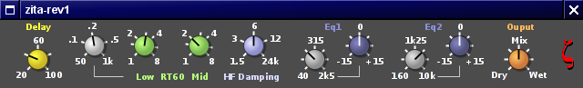

REV1 - Quick guide |
|
|
REV1 is a reworked version of the reverb originally developed for Aeolus. Its character is more 'hall' than 'plate', but it can be used on a wide variety of instruments or voices. It is not a spatialiser - the early reflections are different for the L and R inputs, but do not correspond to any real room. They have been tuned to match left and right sources to some extent. In Stereo mode a dry/wet mix control is provided, so it can be used either as an insert or in send/return mode. For mono just connect one of the two channels. In Ambisonic mode (selected by the -B command line option) the only option is the send/return mode. |
|
|  | |
|
The rotary knobs can be used in two ways: * Click on the knob with the left mouse button, keep it pressed and move either left..right or up..down. * Using the mouse wheel. Press Shift for smaller steps. From Left to right we have: * Delay. A delay of 20 to 100 ms operating on the 'wet' signal. Large values will provide the impression of a larger room. * Reverb time controls. The reverb time (RT60) can be set at low and mid frequencies in the range of 1 to 8 seconds. The range affected by the 'Low' control is determined by the frequency setting to the left of it. At high frequencies the reverb time will decrease, this is controlled by the 'HF damping' control. The value set is the frequency at which the reverb time will be half the mid-frequency value. * Equaliser. Two parametric filter sections can be used to change the character of the reverb. The operate on the 'wet' signal only of course. The bandwidths are fixed, and somewhat higher than the medium setting of a typical equaliser.
* Dry/wet mix. This is provided in stereo mode only. When the reverb is used in send/return mode this should be set to the full 'wet' position. * XYZ gain. This is provided in ambisonic mode only, and controls the relative gain of the first order signals. This can be used to change the 'spatiality', and also to adapt the output to the normalisation standard used downstream. The EQ and output controls are 'dezippered'. The others are not and may (but usually don't) cause side effects when modified.
|